The school points system. Teachers give merits for good work and demerits for breaking rules, students see their points and history, and the administration keeps an eye on rankings and students at risk. Pick your role.
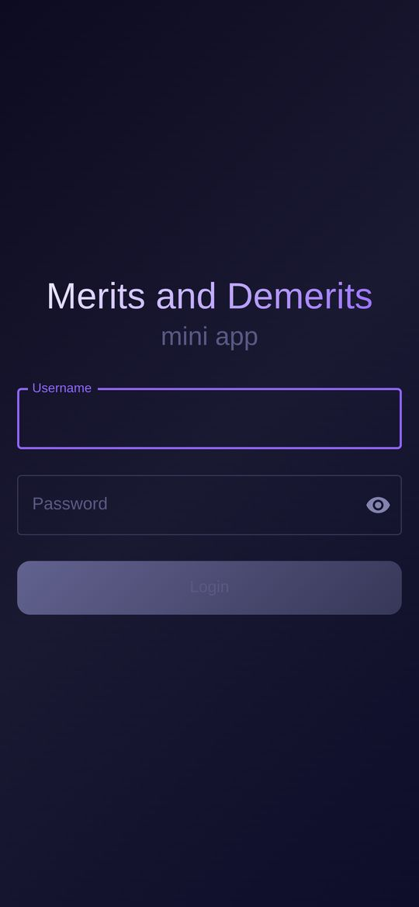
A student's level depends on their total points and shows as a coloured badge next to their name. Merits move a student right on the scale, demerits move them left.
At 50 points or below the system creates an intervention automatically: 41–50 is a warning, 31–40 a talk with the homeroom teacher, 30 and below the school counsellor. Admins see them under Interventions & Alerts.
The first time you sign in, a short tour for your role starts on its own. It highlights each part of the screen, moves between pages for you, and explains what everything does.
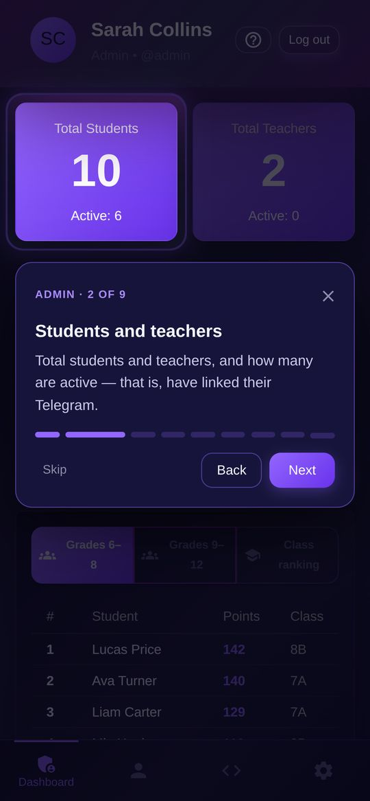
Open the app. Your name, class, points and level are at the top.
Below, Points History shows every entry as a card: the rule, the teacher's comment, who gave it and when. A green edge is a plus, red is a minus.
In the ranking your row is marked You. Grades 6–8 and 9–12 are ranked separately.
If you think a point was given by mistake, talk to the teacher who gave it. Their name is in your history. They or the administration can remove it.
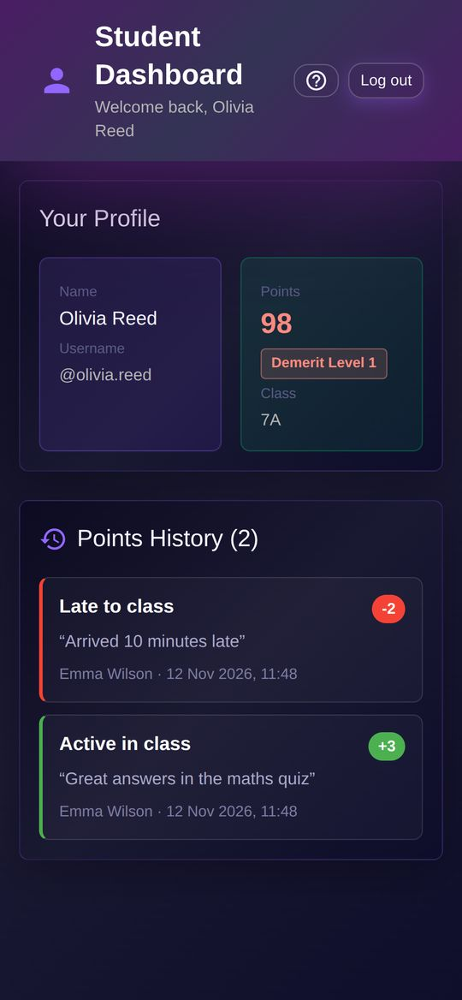
There are three tabs at the bottom: Dashboard with your history, Students for assigning points, and Rules with the list of rules.
Open Students and pick a class, or search by name.
Each student shows their points and level, so you can see at a glance who is at risk.
Tap the student you want.
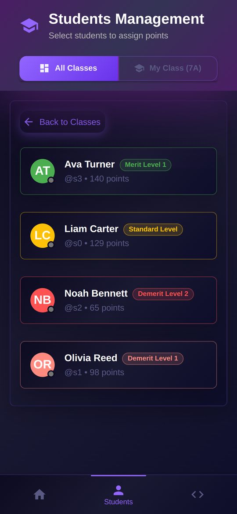
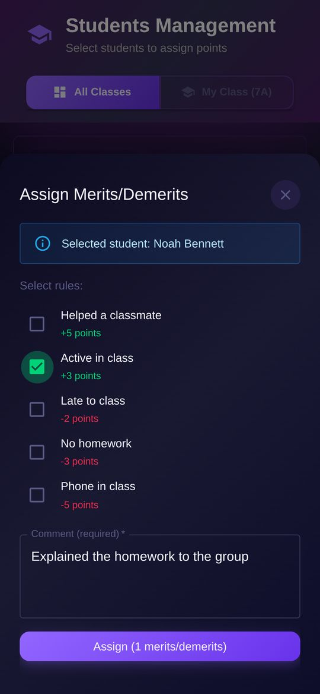
In Assign Merits/Demerits, tick one or more rules. Green ones add points, red ones take them away.
Write a comment. It is required, and the student will see it.
Tap Assign. You'll see Points assigned, and the student's points update right away.
My Class shows only the class where you are the homeroom teacher.
There, tapping a student opens their full history from every teacher. You can assign points from there too.
If anyone in your class drops below 100 points, a warning with their names appears on your dashboard.
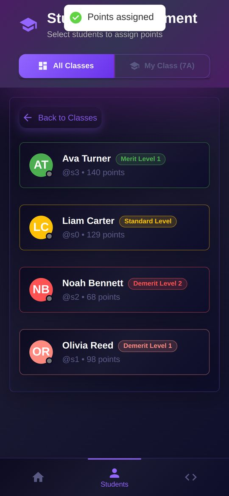
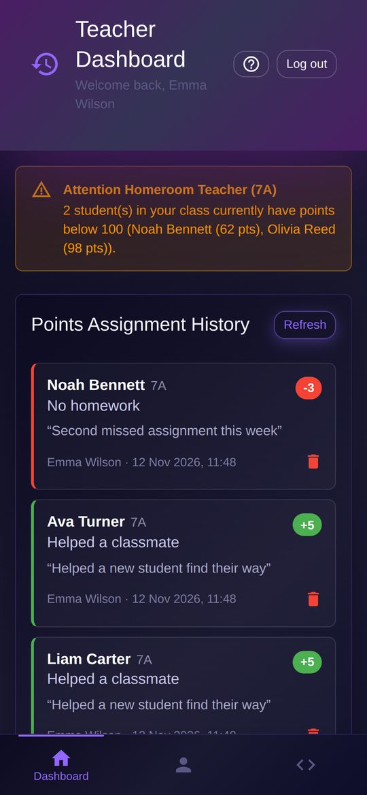
Open Dashboard. Points Assignment History lists everything you have assigned.
Tap the red bin on the wrong entry. The student's points and ranking go back to what they were.
If the administration has closed point assignment or the deadline has passed, you can't assign points. The app tells you why at the top of the page.
Rules lists every school rule with its points.
Tap a rule to pick students for it straight away.
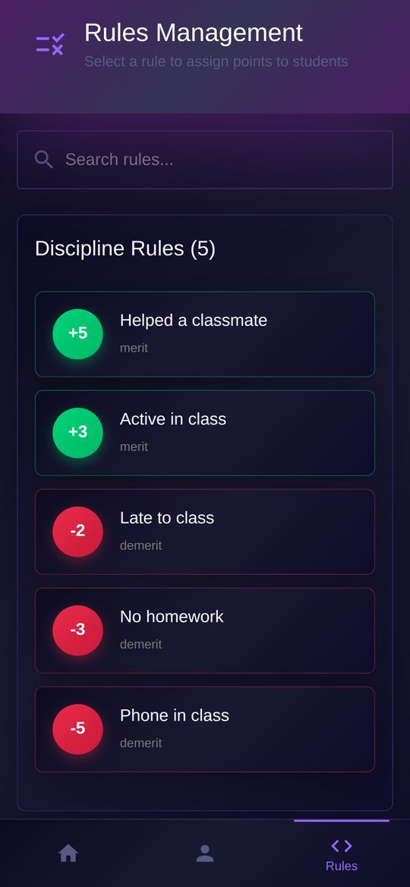
Tabs: Dashboard, Users for students and teachers, Codes for rules, and Settings for moderation, the scoring timer and reports.
Dashboard shows how many students and teachers there are, how many are active (have linked Telegram), and totals of merits and demerits.
Switch the table with Grades 6–8, Grades 9–12 and Class ranking.
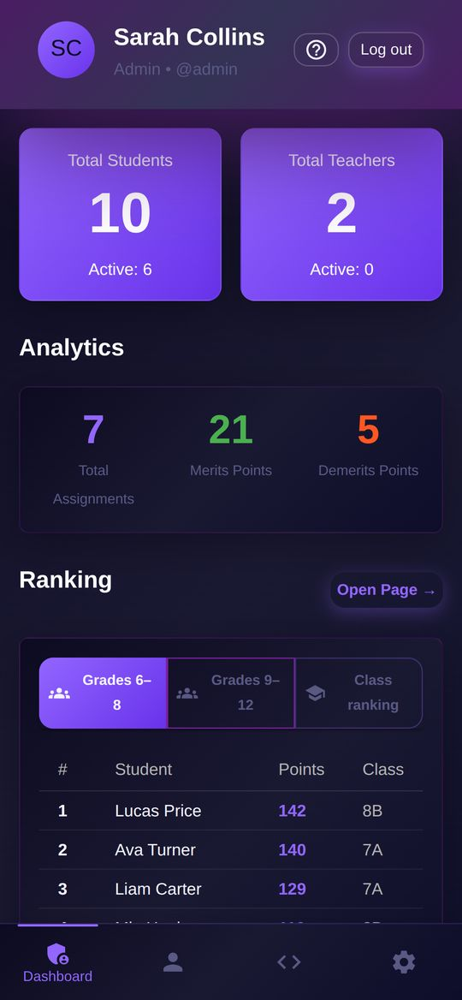
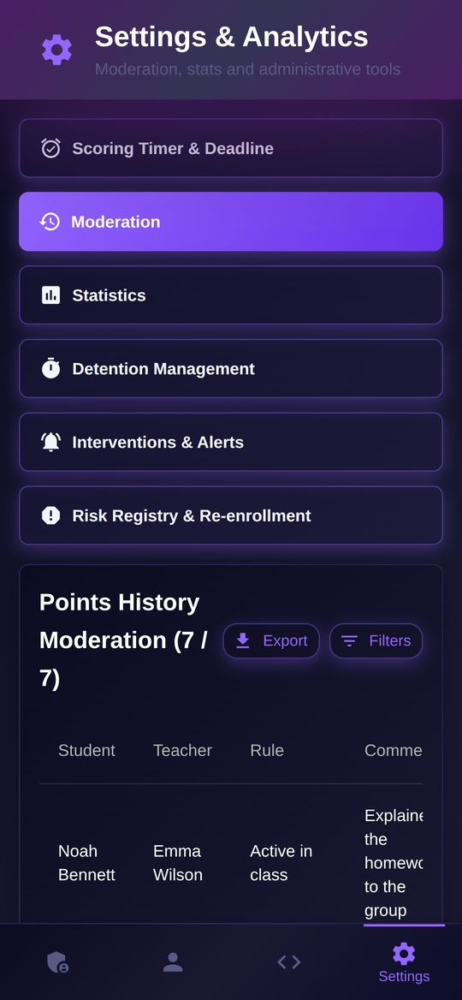
Open Users and switch between Students and Teachers.
Pick a class or search by name to find someone. Add new people, set usernames and passwords, and assign homeroom teachers.
Leave the password empty when editing to keep the current one.
A green dot on someone's avatar means they have linked Telegram.
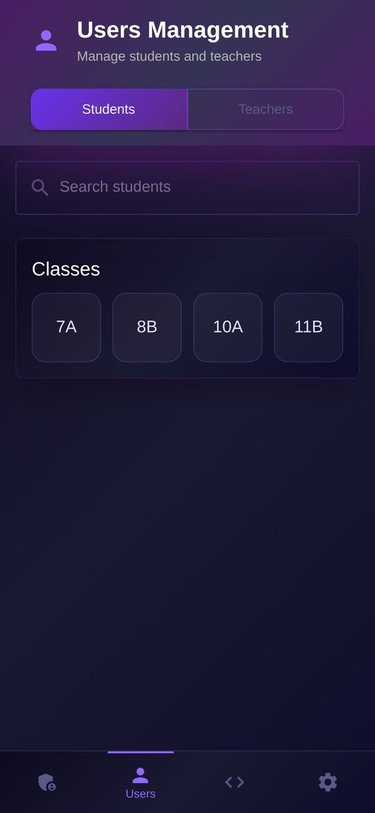
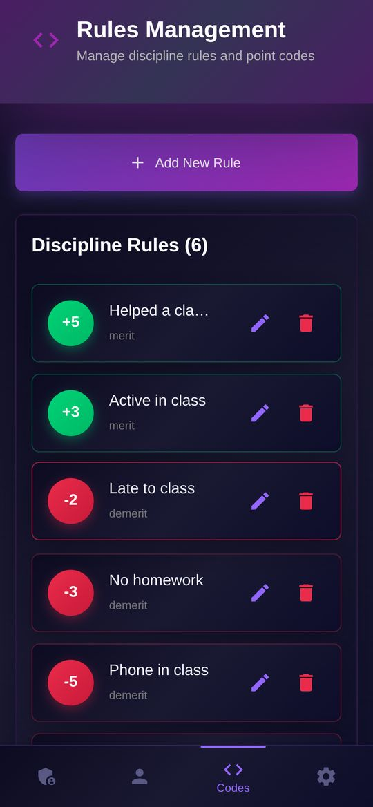
Open Codes. Every rule has edit and delete buttons; teachers see changes right away.
Tap Add New Rule.
Choose the Type: Merit (+) or Demerit (-).
Enter the number of points as a positive number. The type decides the sign: Demerit with 2 points takes 2 away.
Pick who can use it in Access level: everyone, teachers and admins, or admins only.
Optionally tick Set a usage limit, for example at most once a week per student, then tap Create.
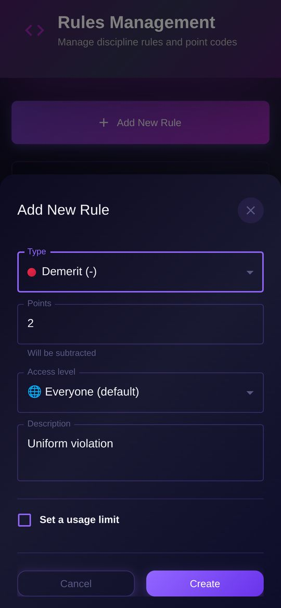
Ask a school administrator. They can set a new password in Users.
That's protection against password guessing. Wait 5 minutes and try again. The wait gets longer after repeated mistakes.
Open the app in your new Telegram and sign in with your username and password. The link moves to the new account.
Close the app completely and open it again. In a browser, just refresh the page.
Check that you wrote a comment. If the app says point assignment is closed, contact the administration. A rule can also have a usage limit for the week or another period.